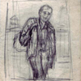

Заключенный: Лев Копелев
В январе 1947 года Копелев был освобожден. Однако после короткого пребывания на свободе, ему сообщили, что его дело будет заново пересмотрено. Спустя несколько месяцев Копелева арестовали. Несмотря на то, что ему была предоставлена возможность защищать себя на судебном процессе, его приговорили к еще трем годам заключения в исправительно-трудовом лагерях и двум годам поражения в гражданских правах. Позднее приговор был аннулирован на основании чрезмерной мягкости. Копелева снова судили и приговорили уже к десяти годам лагерей и пяти годам поражения в гражданских правах. « Я осознал, что такова была моя судьба, что я заслужил быть наказанным – в течение долгих лет я рьяно участвовал в ограблении крестьян, боготворении Сталина, самообмане и самообольщении во имя исторической необходимости. Постепенно я потерял уважение к идеям, которые « увлекая массы», губят целые народы.

Out of the Camp
Выжившие
Миллионы пережили Гулаг. Во время сталинского режима ежегодно 20-40 процентов лагерного населения получали освобождение. Около 2-3 миллионов заключенных обрели свободу после смерти Сталина. Приблизительно 16 миллионов человек пережили Гулаг.
Однако Гулаг разрушил жизни даже тех, кто сумел его пережить. Распадались семьи, когда одного из супругов заставляли прекращать отношения с супругом, имевшим клеймо врага народа. У заключенных матерей отнимали детей, которых они потом никогда не видели. Гулаг требовал физических и психологических затрат, которые были невосполнимя для многих.
После освобождения из Гулага большинству заключенных запретили вернуться домой. Им предписали оставаться либо в ссылке, либо жить в местности, расположенной не менее чем в ста километрах от крупных советских городов. Бывшие заключенные, имея отметку о пребывании в лагере в документах удостоверяющих личность, подвергались дискриминации при приеме на работу и получении жилья. Чиновники, сограждане и даже бывшие друзья обращались с ними как с изгоям. В лучшем случае они относились к ним с подозрением, в худшем